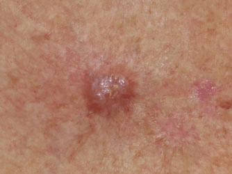

Several surgical options are available for treating basal cell carcinoma. Depending on the size and location of the removed lesion,
the wound may be allowed to heal on its own, stitched closed (sutured), or covered with a skin graft, a patch of healthy skin
from another site on your body.
These procedures include the following:
Drugs used to treat basal cell carcinoma include the following: